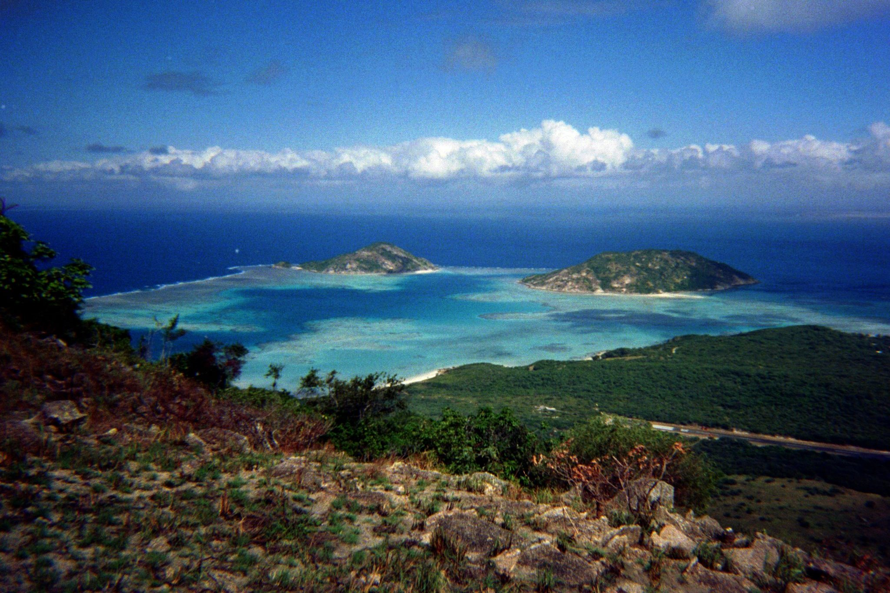
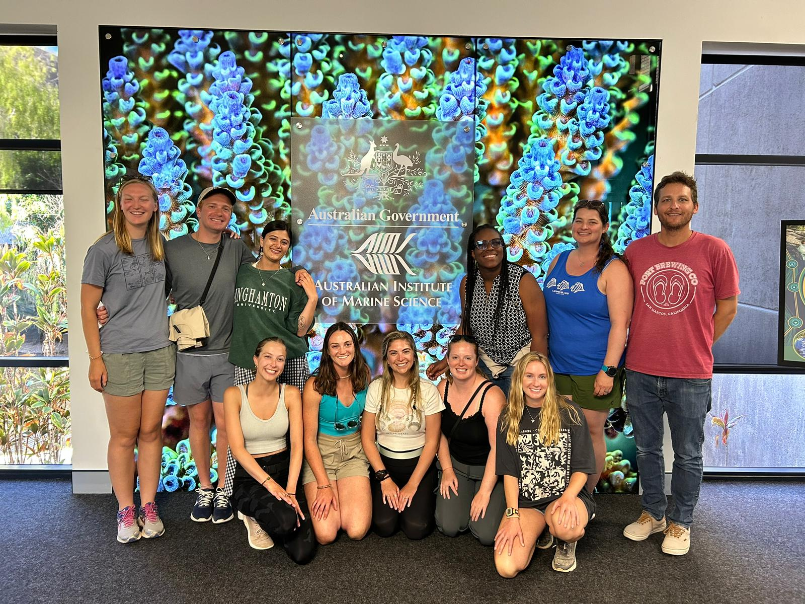

Australia NSF IRES Program
This trip was an International Research Experience for graduate Students (IRES) funded by the National Science Foundation (NSF). I took an intensive course studying transdisciplinary coral reef science. We heard from Aborigional Australian leaders, historians, coral reef scientists and social-economic scientists during our trip, explaining the value and benefit of using transdisciplinary approaches to tacking the issues of coral reefs worldwide.
 This trip did not start out well for me, I did have a small hissy fit in the Dallas Airport at midnight because I missed my flight from Dallas to Sydney. The departing plane from Miami to Dallas was held up leaving its earlier destination, which set in motion for me a chaotic and depressing ride, because I knew at 5pm I wasn’t going to be going to Australia that evening. So, out of our cohort of 10, I was the one person that got delayed and flew into Australia a day later than everyone else. Which in the grand scheme of things is nothing, but in the moment I was very upset. Luckily, the rest of the trip went smoothly and more importantly, my flight back home went without a hitch, which was more important since I’d be going straight into a Grand Canyon Exhibition.
This trip did not start out well for me, I did have a small hissy fit in the Dallas Airport at midnight because I missed my flight from Dallas to Sydney. The departing plane from Miami to Dallas was held up leaving its earlier destination, which set in motion for me a chaotic and depressing ride, because I knew at 5pm I wasn’t going to be going to Australia that evening. So, out of our cohort of 10, I was the one person that got delayed and flew into Australia a day later than everyone else. Which in the grand scheme of things is nothing, but in the moment I was very upset. Luckily, the rest of the trip went smoothly and more importantly, my flight back home went without a hitch, which was more important since I’d be going straight into a Grand Canyon Exhibition.
My 17 hour plane ride flew into Sydney, and then I had what felt like a quick 4 hour trip from Sydney to the Cairns airport. Because I was a day late, Tyler, our trip leader, arranged for a van to pick me up and drop me off in downtown Port Douglas, where the rest of the group would be waiting for me. I’d traveled alone many times at this point, so wasn’t scared or worried, just a little nauseous from the van ride, but I got over it. I finally met everyone in person after having plenty of online zoom meetings to prepare for the trip, and everyone was so nice and welcoming right away! It definitely helped that I already knew Emily, as she is also a PhD student at FIU, and Piper, who graduated from IU and we had mutual friends in undergrad. What a small world! But I was fortunate to have two buddies already with me in this three week endeavor.
We spent the first two days in the Daintree rainforest, staying at the Crocodylus eco lodge, where we listened to lectures from Aborigional leaders regarding their particiaption in modern ecological management practices in the Daintree and historians who gave us a rundown of the political influences that have altered the Daintree ecosystem. We stayed there to also get a multidisciplinary view of how the Northern Great Barrier Reef is impacted by the Daintree, and vice versa. We also took a few hikes and had lunch on Thornton Beach, which was gorgeous. The flora and fauna in the Daintree was incredible, it is the oldest continuously surviving rainforest in the world. We learned about some of the native tree species, including fan palms, strangler figs, and more. The intimate symbiotic relationships on display here was beautiful to learn about, as this ecosystem has had millennia to perfect these partnerships. After our experience in the rainforest, we drove back down to Cairns to hop on two small Piper Chieftians, that took us and all of our gear to Lizard Island! Saying one last goodbye to the mainland and the Daintree, we took off for the hour plane ride over the Great Barrier Reef. This was such a remote area of the world, I had never experienced anything like it before. It was quite a stark difference from living in Miami for the past year!
 We stayed at Lizard for a little less than two weeks. This time was absolutely magical, I could have stayed here for the rest of my life! The island has the research station where we stayed at, but also has a high-profile resort on the island as well. That was interesting, we didn’t see many of the visitors of the resort but knowing that there were essentially two separate worlds living on this tiny remote island was weird. We got off the planes, unloaded luggage and was picked up by some of the research station staff in a big John Deer tractor! I of course had a little chuckle about that, and felt right at home.
We stayed at Lizard for a little less than two weeks. This time was absolutely magical, I could have stayed here for the rest of my life! The island has the research station where we stayed at, but also has a high-profile resort on the island as well. That was interesting, we didn’t see many of the visitors of the resort but knowing that there were essentially two separate worlds living on this tiny remote island was weird. We got off the planes, unloaded luggage and was picked up by some of the research station staff in a big John Deer tractor! I of course had a little chuckle about that, and felt right at home.
Now, I wouldn’t say that I have roughed it too hard in my previous field accomodations, but after seeing the research and housing facilities at Lizard, I know why it’s refered to as a world class research insititute. Everything was amazing, from our little beach cabins, the boating and diving facilities, and the laboratory facilities was top notch. We hit the ground running and got an orientation walk from Tyler and a boating and diving safety lecture from Lyle, the DSO for the station. The next day, we took the boats out to our first site, Clam Gardens, which was appropriately named. Unlike our Caribbean coral reef ecosystem, the Great Barrier Reef is riddled with giant clams that become encrusted into the substrate by the fast growing and abundant Acorpora species. I think out of all of the incredible and iconic wildlife I saw here, the giant clams were my favorite. On their lips was the most spectacular blue coloration I have ever seen. While being quite the fashion statement, the blue coloration also helps direct downwelling light into the clams tissues so that their symbiont algae can photosynthesize (just like the relationship with coral). We also saw some of the most unique species of coral, including lots of Pocillopora, which was about the only genus I felt comfortable IDing.
Throughout our time on Lizard we had a few researchers joining us and leading lectures and field excursions. My favorite of all of them was Dr. Morgan Pratchett. If you are studying coral biology/ecology, then you definitely know how much of a big shot he is in the field. Learning GBR coral species ID from him was such a treat (and I like to play the taxonomic guessing game, too, which helps) and his many lectures on coral reef ecology in the GBR were very insightful. After he left, we had some time without lectures to go out and collect our own data for our mini-project presentations. We also had some down time to explore the island, which included our day-long hike up Cooks Look, which was the most incredible view I’ve ever seen. We got to overlook the Blue Lagoon and smaller islands surrounding Lizard and see the outer reef. It was so amazing.

After our time was up on Lizard, we headed back to Townsville, home of James Cook University, where we had some lectures with researchers who study the social-economic interactions of ecosystem-based and species-based management practices. This research was also very interesting and highlighted just how interdependent our marine ecosystem is with local and global economies, in addition to communities. James Cook was a really neat University, I am glad that we were able to visit and get a little tour. We also toured the Billabong Sanctuary, where we got to have up-close interactions with all of the iconic Australia species, like Kangaroos, Koalas, crocodiles, and wombats. We also toured the Australian Institute of Marine Science Townsville location, the insititute’s headquarters, which was absolutely incredible. They have the world class SeaSim - the National Sea Simulator. It allows for researchers to precisely control water quality parameters such as temperature, pH, and salinity to get the most impact out of laboratory experiments. They also had a large host of adaptive evolution breeding experiments going on, with a few chimeras too. As much as I loved being on Lizard Island, Townsville was also an awesome end of trip experience for all of us.
To round out our trip, Morgan booked us a room at a JCU building downtown where we could present our research projects, and a few of his grad students came along too to listen. It was a great little celebration and we all went out to dinner together afterwards! This trip was truly a once in a lifetime experience for me, and I am so happy that I was able to participate in this program, and espeically to see the Great Barrier Reef before it eventually succumbs to climate change. I loved Australia too, and would go back in a heartbeat to work there. I can’t say when I will be back, but I know that I will make my way down under again soon.
Additionally, I created the end of program vlog for our trip! You can check it out here:
Image Gallery:



Images courtesy of myself (shot on iPhone, 35mm film camera, GoPro Hero 10)